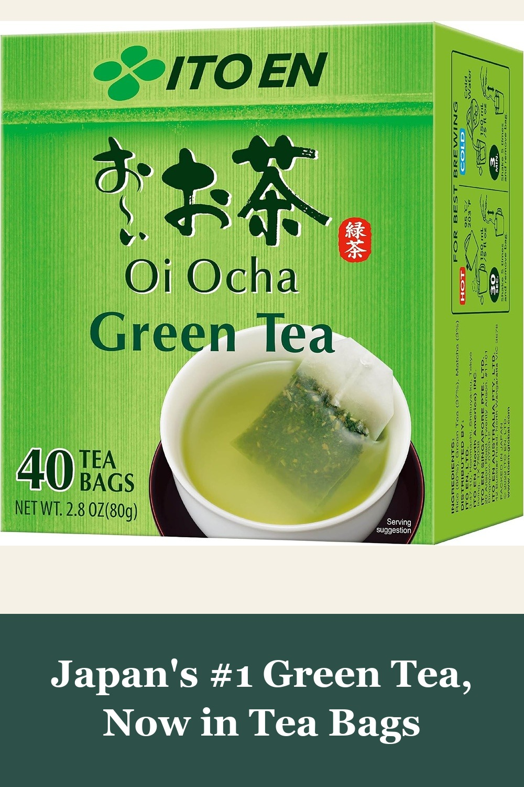
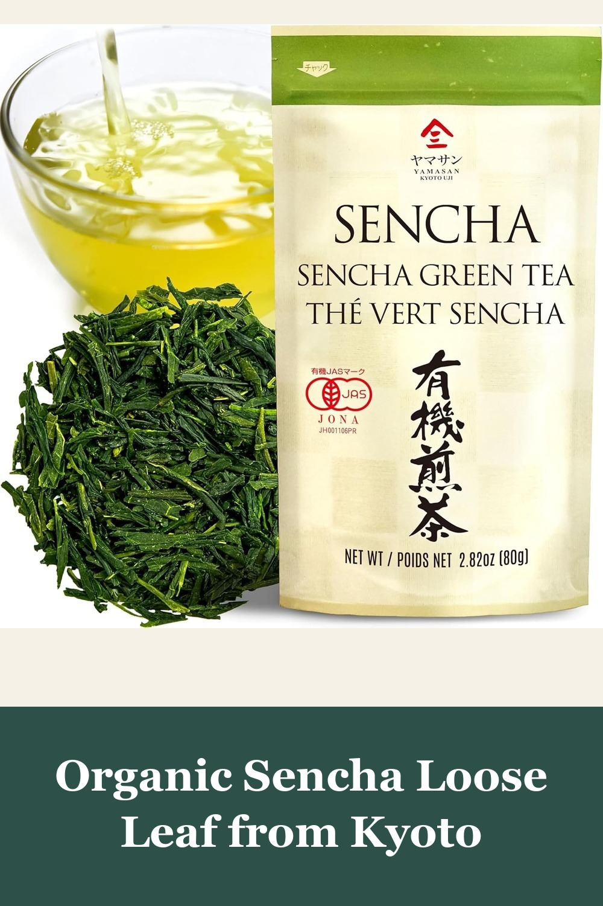
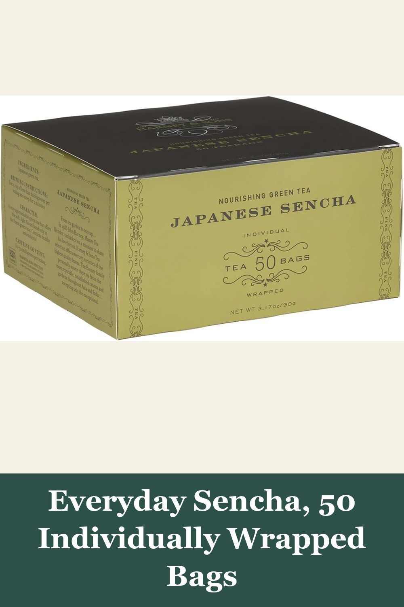

ITO EN Oi Ocha Green Tea, Tea Bags 40ct
Oi Ocha is Japan's best-selling green tea — over 1,000 Amazon reviews at 4.7 stars. Whole-leaf tea bags for a smooth, authentic cup, hot or cold, in minutes.
Japan's #1 green tea for a reason! Great earthy flavor and aroma. I enjoy a couple of cups every morning to start my day.— verified Amazon buyer
View on Amazon →
YAMASAN KYOTO UJI Japanese Organic Sencha Green Tea Loose Leaf, 2.82oz
Grown and organically certified in Uji, Kyoto — the birthplace of Japanese tea. Over 4,300 reviews and Amazon's Choice, with a fresh, umami-rich flavor loose-leaf drinkers love.
It's smooth, not bitter at all, and doesn't leave any weird aftertaste. If anything, it has a really clean finish that makes me want to sip slowly and savor it.— verified Amazon buyer
View on Amazon →
Harney & Sons Japanese Sencha Green Tea, 50 Tea Bags
A light, delicate Japanese sencha from a beloved family tea company — over 4,500 reviews and Amazon's Choice. Individually wrapped bags make it an easy daily ritual.
This is a light refreshing green tea. I can taste the florals in this Sencha tea, unlike others that are a bit bitter this one is very smooth.— verified Amazon buyer
View on Amazon →